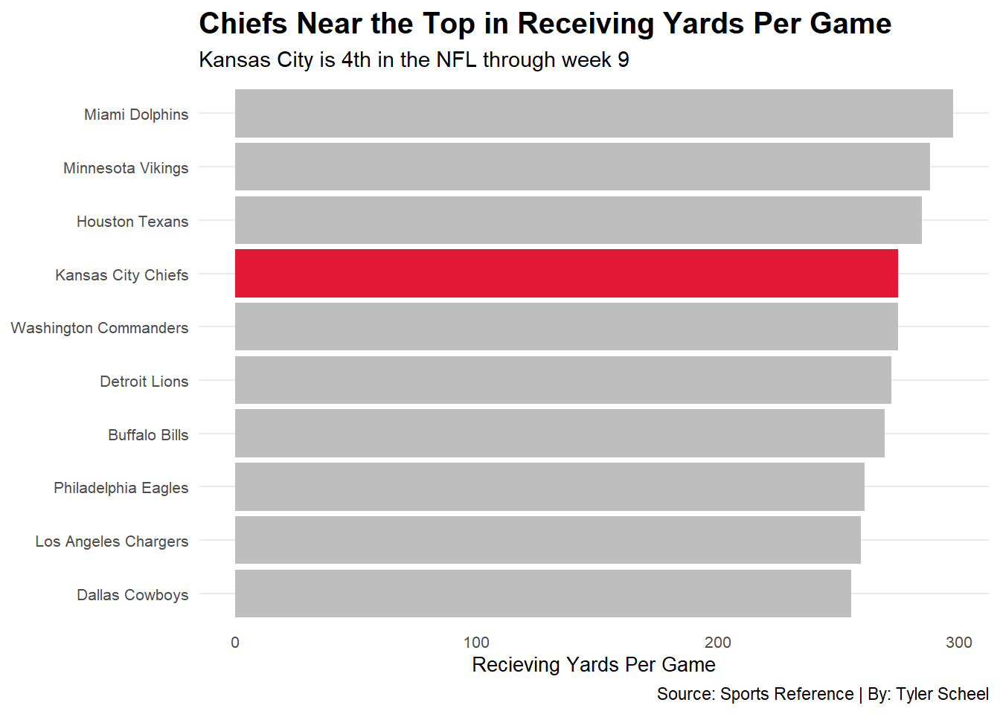

── Attaching core tidyverse packages ──────────────────────── tidyverse 2.0.0 ──
✔ dplyr 1.1.2 ✔ readr 2.1.4
✔ forcats 1.0.0 ✔ stringr 1.5.0
✔ ggplot2 3.4.3 ✔ tibble 3.2.1
✔ lubridate 1.9.2 ✔ tidyr 1.3.0
✔ purrr 1.0.2
── Conflicts ────────────────────────────────────────── tidyverse_conflicts() ──
✖ dplyr::filter() masks stats::filter()
✖ dplyr::lag() masks stats::lag()
ℹ Use the conflicted package (<http://conflicted.r-lib.org/>) to force all conflicts to become errors
library(ggrepel)library(ggalt)
Registered S3 methods overwritten by 'ggalt':
method from
grid.draw.absoluteGrob ggplot2
grobHeight.absoluteGrob ggplot2
grobWidth.absoluteGrob ggplot2
grobX.absoluteGrob ggplot2
grobY.absoluteGrob ggplot2
library(ggtext)library(gt)
Using Sports Reference and AWS Next Gen Stats.
NGSplayer <-read_csv("NGSv2.csv")
Rows: 124 Columns: 15
── Column specification ────────────────────────────────────────────────────────
Delimiter: ","
chr (3): PLAYER, TEAM, POS
dbl (12): CUSH, SEP, TAY, TAYpct, REC, TAR, CTCHpct, YDS, TD, YACpr, xYACpr,...
ℹ Use `spec()` to retrieve the full column specification for this data.
ℹ Specify the column types or set `show_col_types = FALSE` to quiet this message.
TeamAdv23 <-read_csv("TmAdvRec23v2.csv")
Rows: 32 Columns: 17
── Column specification ────────────────────────────────────────────────────────
Delimiter: ","
chr (1): Tm
dbl (16): G, Tgt, OnTgt, Rec, Yds, TD, 1D, YBC, YBCpr, YAC, YACpr, ADOT, Brk...
ℹ Use `spec()` to retrieve the full column specification for this data.
ℹ Specify the column types or set `show_col_types = FALSE` to quiet this message.
First I will show what the Chiefs do well.
Chart 1: Receiving Yards Per Game (data from Sports Reference)
Warning: Returning more (or less) than 1 row per `summarise()` group was deprecated in
dplyr 1.1.0.
ℹ Please use `reframe()` instead.
ℹ When switching from `summarise()` to `reframe()`, remember that `reframe()`
always returns an ungrouped data frame and adjust accordingly.
Warning: Returning more (or less) than 1 row per `summarise()` group was deprecated in
dplyr 1.1.0.
ℹ Please use `reframe()` instead.
ℹ When switching from `summarise()` to `reframe()`, remember that `reframe()`
always returns an ungrouped data frame and adjust accordingly.
ggplot() +geom_bar(data=TopRecOffenses,aes(x=reorder(Tm, YPG), weight=YPG), fill="grey") +geom_bar(data=ChiefsYPG,aes(x=reorder(Tm, YPG), weight=YPG), fill="#E31837") +coord_flip() +labs(x="",y="Recieving Yards Per Game",title="Chiefs Near the Top in Receiving Yards Per Game", subtitle ="Kansas City is 4th in the NFL through week 9",caption="Source: Sports Reference | By: Tyler Scheel" ) +theme_minimal() +theme(plot.title =element_text(size =15, face ="bold"),axis.title =element_text(size =10),axis.title.y =element_blank(),axis.text =element_text(size =8),axis.ticks =element_blank(),panel.grid.minor =element_blank(),panel.grid.major.x =element_blank(),legend.position="bottom" )

Chart 2: YAC, xYAC. I don’t know if I should use Player or Team data yet.
The next two code blocks are to show PLAYER YAC/Expected numbers.
Warning: Returning more (or less) than 1 row per `summarise()` group was deprecated in
dplyr 1.1.0.
ℹ Please use `reframe()` instead.
ℹ When switching from `summarise()` to `reframe()`, remember that `reframe()`
always returns an ungrouped data frame and adjust accordingly.
ChiefsYAC <- NGSplayer |>summarise( PLAYER, YACpr, xYACpr,YACoverExp = YACpr - xYACpr) |>arrange(desc(xYACpr)) |>top_n(20,xYACpr) |>filter(PLAYER =="Rashee Rice"| PLAYER =="Marquez Valdes-Scantling"| PLAYER =="Kadarius Toney"| PLAYER =="Skyy Moore"| PLAYER =="Travis Kelce")
Warning: Returning more (or less) than 1 row per `summarise()` group was deprecated in
dplyr 1.1.0.
ℹ Please use `reframe()` instead.
ℹ When switching from `summarise()` to `reframe()`, remember that `reframe()`
always returns an ungrouped data frame and adjust accordingly.
^^ Here I was trying to create a dataframe with only Cheifs players so I could highlight them in the dumbbell chart. I still haven’t figured out how to do that.
ggplot() +geom_dumbbell(data=PlayerYAC, aes(y=reorder(PLAYER, xYACpr), x=YACpr, xend=xYACpr),size =2,colour ="lightgrey",colour_x ="darkgrey",colour_xend ="black") +geom_dumbbell(data=ChiefsYAC, aes(y=reorder(PLAYER, xYACpr), x=YACpr, xend=xYACpr),size =2,colour ="grey",colour_x ="#FFB81C",colour_xend ="#E31837") +labs(x="Yards After Catch/Reception",y="",title="The Chiefs Top Pass Catchers Excell at Expected YAC", subtitle ="5 Kansas City players rank in the top 20 in expected YAC per reception (red), \n but aren't as dominant in actual YAC (gold)",caption="Source: NFL Next Gen Stats | By: Tyler Scheel" ) +theme_minimal() +theme(plot.title =element_text(size =15, face ="bold"),axis.title =element_text(size =10),axis.text =element_text(size =8) )
Warning: Using the `size` aesthetic with geom_segment was deprecated in ggplot2 3.4.0.
ℹ Please use the `linewidth` aesthetic instead.
Warning: Returning more (or less) than 1 row per `summarise()` group was deprecated in
dplyr 1.1.0.
ℹ Please use `reframe()` instead.
ℹ When switching from `summarise()` to `reframe()`, remember that `reframe()`
always returns an ungrouped data frame and adjust accordingly.
Warning: Returning more (or less) than 1 row per `summarise()` group was deprecated in
dplyr 1.1.0.
ℹ Please use `reframe()` instead.
ℹ When switching from `summarise()` to `reframe()`, remember that `reframe()`
always returns an ungrouped data frame and adjust accordingly.
Warning: Returning more (or less) than 1 row per `summarise()` group was deprecated in
dplyr 1.1.0.
ℹ Please use `reframe()` instead.
ℹ When switching from `summarise()` to `reframe()`, remember that `reframe()`
always returns an ungrouped data frame and adjust accordingly.
DropsTCR |>gt() |>cols_label(Tm ="Team",Drop ="Drops" ) |>tab_header(title ="Kansas City Struggles to Catch",subtitle ="The Chiefs lead the NFL in dropped passes, nearly doubling the league average" ) |>tab_style(style =cell_text(color ="black", weight ="bold", align ="left"),locations =cells_title("title") ) |>tab_style(style =cell_text(color ="black", align ="left"),locations =cells_title("subtitle") ) |>tab_source_note(source_note =md("**By:** Tyler Scheel | **Source:** Sports Reference") ) |>tab_style(locations =cells_column_labels(columns =everything()),style =list(cell_borders(sides ="bottom", weight =px(3)),cell_text(weight ="bold", size=15) ) ) |>opt_row_striping() |>opt_table_lines("none") |>tab_style(style =list(cell_fill(color ="#E31837"),cell_text(color ="#FFB81C") ),locations =cells_body(rows = Tm =="Kansas City Chiefs") )
Kansas City Struggles to Catch
The Chiefs lead the NFL in dropped passes, nearly doubling the league average